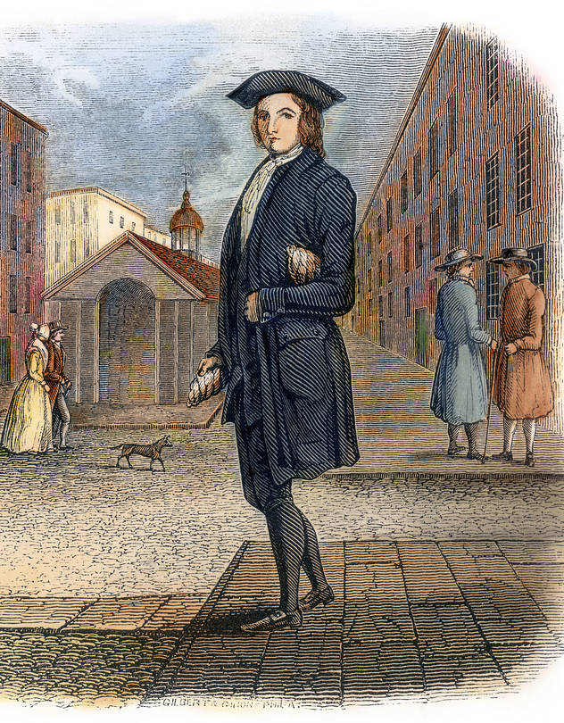

Juventud de Benjamin Franklin
Primeros Años
Nació el 17 de enero de 1706 en Boston, Massachusetts. Fue el decimoquinto de diecisiete hermanos. Su padre, Josiah Franklin, era un humilde fabricante de velas y jabón. A los 12 años, Benjamin comenzó a trabajar como aprendiz en la imprenta de su hermano James. Allí descubrió su pasión por la lectura y la escritura, llegando a redactar artículos bajo el seudónimo de Silence Dogood. Tras disputas con su hermano, huyó a Filadelfia a los 17 años, donde prosperó rápidamente como impresor y editó el famoso Almanaque del pobre Richard.
